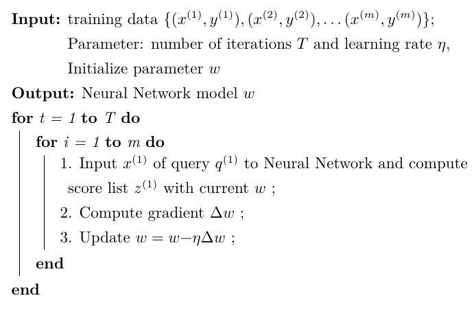

LTR方法可以分为 point-wise、pair-wise、list-wise 三类, ListNet 算法就是 list-wise 方法的一种.
ListWise 方法
上标表示训练集中 query 的序号, 下标表示一个特定query对应的doc 的序号:
- $Q = \{q^{(1)}, q^{(2)}, \dots, q^{(m)}\}$ : 训练集中query的集合, $m$ 表示训练集中 query的数量;
- $d^{(i)} = (d_1^{(i)}, d_2^{(i)}, \dots, d_{n^{(i)}}^{(i)})$ : query $q^{(i)}$ 对应的doc列表, $n^{(i)}$ 表示第 $i$个query 对应的doc 列表的大小;
- $y^{(i)} = (y_1^{(i)}, y_2^{(i)}, \dots, y_{n^{(i)}}^{(i)})$ : $d^{(i)}$ 列表中每一个doc 的rank分. 这个分可以是由人工标注得到, 也可以通过用户行为日志得到(e.g. 基于点击模型挖掘. 基于用户行为的标注对于高频query效果较好, 但对长尾query效果欠佳), . 根据实际需求, 这个rank分可以分为若干级别, 一般为5级$\{0, 1, 2, 3, 4\}$, 数值越大说明对应的 doc 和 query 相关性约高.
- $x_j^{(i)} = \Psi(q^{(i)}, d_j^{(i)})$: 由 $q^{(i)}$ 和 $d_j^{(i)}$ 组成的 query-doc pair 的特征.
- $x^{(i)} = (x_1^{(i)}, x_2^{(i)}, \dots, x_{n^{(i)}}^{(i)})$: query $q^{(i)}$ 对应的query-doc pair 列表 特征集合. note: 上标表示query序号, 下标表示doc序号.
- $\mathcal {T} = \{x^{(i)}, y^{(i)}\}_{i=1}^m$ : 训练集合.
假设有一个算分函数 $f(x; w)$, 其中 $w$ 为模型参数, $x$ 为输入特征向量, 这个函数可以是简单的线性回归函数，也可以是复杂的神经网络模型. 输入一个 query-doc pair 的特征向量, 输出一个得分 . 对于一个query $q^{(i)}$ 的得分列表可以表示为 $z^{(i)} = \{f(x_1^{(i)}), f(x_2^{(i)}), \dots, f(x_{n^{(i)}}^{(i)})\}$. 我们希望按照 $z^{(i)}$ 对所有doc 进行排序 和 按照 $y^{(i)}$ 对doc进行排序 越相似越好.
这个相似程度我们使用 损失函数来衡量 :
$$
\sum_{i-1}^m L(y^{(i)}, z^{(i)})
$$
我们的目标就是通过最小化损失函数训练一个算分函数 $f(x; w)$ 用来预测.
ListNet 中 的算分函数 $f(x; w)$ 选用的是一个神经网络模型, 下面介绍 ListNet 是怎么构建这个损失函数的.
ListNet 损失函数
ListNet使用 cross-entropy 作为损失函数, cross-entropy 可以定义为 $H(p,q) = \sum p \log q$, 所以我们只需要确定这个公式中 p和q的表示方式.
根据样本数据的实际标注的 $y$ 值 , $d^{(i)} = (d_1^{(i)}, d_2^{(i)}, \dots, d_{n^{(i)}}^{(i)}) $ 中的 $d_j^{(i)}; j \in \{1, 2, \dots n^{(i)} \}$ 排列在第一个的概率表示为:
$$
P_{y^{(i)}}(j)
$$
根据算分公式计算得到的 $z$ 值, 集合 $d^{(i)} = (d_1^{(i)}, d_2^{(i)}, \dots, d_{n^{(i)}}^{(i)}) $ 中的 $d_j^{(i)}; j \in \{1, 2, \dots n^{(i)} \}$ 排列在第一个的概率表示为:
$$
P_{z^{(i)}}(j)
$$
这两个概率就是交叉熵公式中的 $p$和$q$. 那么我们下面推到这个概率是怎么来的.
Permutation Probability
Suppose that $\pi$ is a permutation on the $n$ objects, and $\phi(\cdot)$ is an increasing and strictly positive function. Then, the probability of permutation $ \pi $ given the list of scores $s$ is defined as
$$
P_s(\pi) = \prod_{j=1}^n \frac{\phi(s_{\pi(j)})}{\sum_{k=j}^n \phi(s_{\pi(k)})}
$$
where $s_{\pi(j)}$ is the score of object at position $j$ of permutation $\pi$.
即, 和某一query对于 $n$ 个doc对象, 可以得到 $A_n^n$ 个排列 (permutation). 再使用算分公式计算得到 $n$ 个doc的得分列表 $s$ 后, 我们可以使用上面的公式计算任意一个排列 $\pi$ 的概率. 其中: $\pi(j)$ 表示排列 $\pi$ 中的第 $j$ 个元素, $s_{\pi(j)})$ 表示第 $j$ 个元素的得分.
上式具有如下性质
- 所有$A_n^n$个排列(permutation)的概率之和为1;
- 概率最大排列是按照得分逆序排列所有doc的;
- 交换排列中两个对象的位置，得分高的对象前移会使得排列概率增大;
- 如果 $\phi(x) = \alpha x$ 是一个线性函数，可以保证 $P_s(\pi)$ 缩放不变性;
- 如果 $\phi(x) = \exp(x)$ 是一个指数函数，可以保证 $P_s(\pi)$ 平移不变性.
此处不一一证明, 需要深究的话请查看原始论文.
一个query对应的有 $n$ 个 doc 的列表, $y^{(i)} = (y_1^{(i)}, y_2^{(i)}, \dots, y_{n}^{(i)})$ 为其一个 score list. $z^{(i)} = \{f(x_1^{(i)}), f(x_2^{(i)}), \dots, f(x_{n}^{(i)})\}$ 为其另一个 score list. 对于这两个 score list 可以分别按照上面的公式计算得到 $A_n^n = n!$ 个 permutation probability. 这样就可以通过 listwise loss function (e.g. cross entropy) 计算得到一个两个score list的相似程度, 能够是两个score list最相似的算分公式 $f(x; w)$ 就是我们要求的算分公式.
但是复杂度太高, 对于 $n$ 个doc, 就需要计算 $n!$ 个permutation probability, 在实际操作中是很难实现的. ListNet 使用 Top One Probability 来解决这个问题
Top One Probability
top one probability 表示在给定 score list 后, 列表中的第 $j$ 个对象排在第一个的概率.
The top one probability of object $j$ is defined as
$$
P_s(j) = \sum_{\pi(i)=j,\pi \in \Omega_n}P_s(\pi).
$$
where $P_s(\pi)$ is permutation probability of $\pi$ given $s$.
其中 $\Omega_n$ 为 $n$ 个对象的所有排列(permutation)的集合, 其中包含 $n!$ 个排列.
按照上面的公式, 仍然需要 $n!$ 个 permutation probability. 实际上我们可以对上面的公式进行推到得到一个更高效的计算方法. 即:
$$
P_s(j) = \frac{\phi(s_j)}{\sum_{k=1}^n \phi(s_k)}.
$$
其中 $s_j$ 是 score list 中第 $j$ 个对象的score.
此处即可得到以交叉熵损失函数, 如下:
$$
\begin{align}
& P_{y^{(i)}}(j) = \frac{\phi(y_j^{(i)})}{\sum_{k=1}^n \phi(y_k^{(i)})}\\
& P_{z^{(i)}}(j) = \frac{\phi(z_j^{(i)})}{\sum_{k=1}^n \phi(z_k^{(i)})}\\
& L(y^{(i)}, z^{(i)}) = - \sum_{j=1}^{n^{(i)}} P_{y^{(i)}}(j) \log P_{z^{(i)}}(j) = - \sum_{j=1}^{n^{(i)}} \frac{\phi(y_j^{(i)})}{\sum_{k=1}^n \phi(y_k^{(i)})} \log \frac{\phi(z_j^{(i)})}{\sum_{k=1}^n \phi(z_k^{(i)})} \\
& \mathcal{L} = \sum_{i-1}^m L(y^{(i)}, z^{(i)}).
\end{align}
$$
模型优化
为了简化表述, 此处我们假定 $\phi(x) = \exp(x)$ , 此时:
$$
\begin{align}
L(y^{(i)}, z_{f_w}^{(i)}) &= - \sum_{j=1}^{n^{(i)}} P_{y^{(i)}}(j) \log P_{z^{(i)}}(j) \\
&= - \sum_{j=1}^{n^{(i)}} \frac{\exp(y_j^{(i)})}{\sum_{k=1}^n \exp(y_k^{(i)})} \log \frac{\exp[f_w(x_j^{(i)})]}{\sum_{k=1}^n \exp[f_w(x_k^{(i)})]}
\end{align}
$$
使用随机梯度下降法, $L(y^{(i)}, z^{(i)})$ 对 $w$ 求偏导, 得到 $\Delta w$:
$$
\begin{align}
\Delta w &= \frac{\partial L(y^{(i)}, z_{f_w}^{(i)})}{\partial w} \\
&=- \sum_{j=1}^{n^{(i)}} \frac{\exp(y_j^{(i)})}{\sum_{k=1}^n \exp(y_k^{(i)})} \frac{\partial f_w(x_j^{(i)})}{\partial w} + \frac{1}{\sum_{j=1}^{n^{(i)}} \exp[f_w(x_j^{(i)})]} \cdot \sum_{j=1}^{n^{(i)}} \exp[f_w(x_j^{(i)})] \frac {\partial f_w(x_j^{(i)})}{\partial w}
\end{align}
$$
使用随机梯度下降法优化求解ListNet模型的算法如下所示

其时间复杂度 $O(m \cdot n_{max})$.
参考资料
Cao Z , Qin T , Liu T Y , et al. Learning to Rank: From Pairwise Approach to Listwise Approach[C]// International Conference on Machine Learning. ACM, 2007.